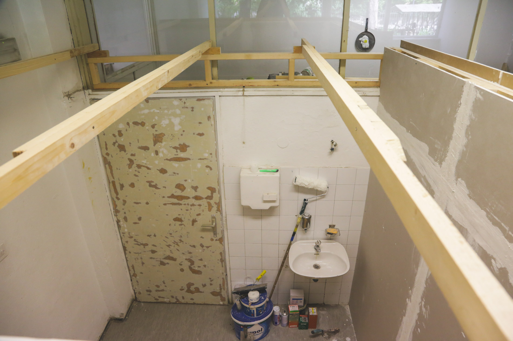
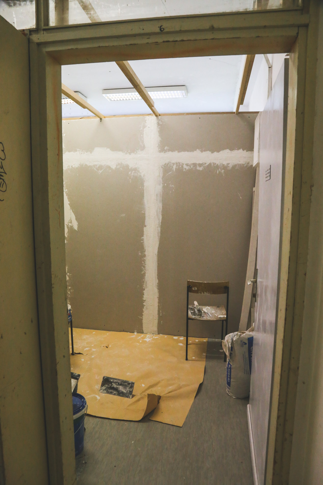

Pita Project
:
razstave
/
galerija-kiparskega-oddelka-aluo-ul
/
O Projektu/
Eseji/
Razstave/
Galerija Kiparskega oddelka Akademije za likovno umetnost in oblikovanje Univerze v Ljubljani
May. 26, 2020

